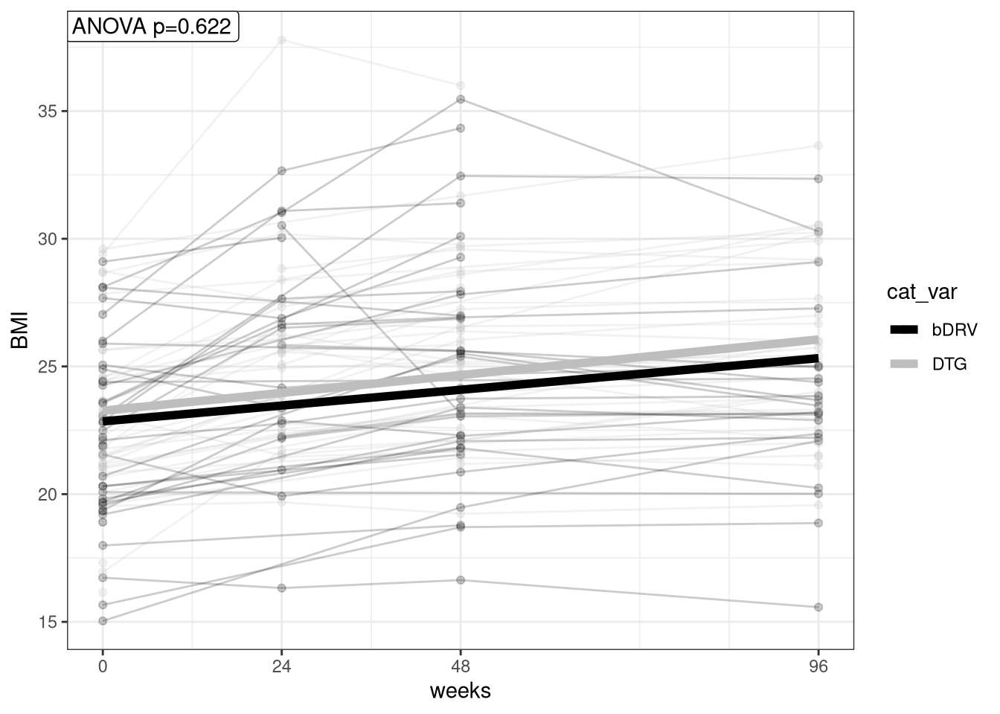
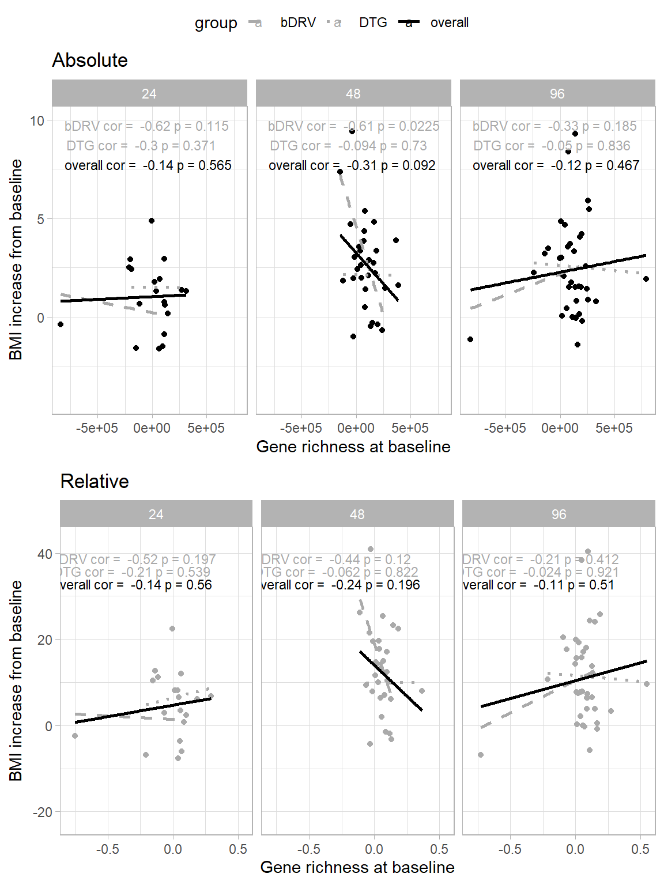
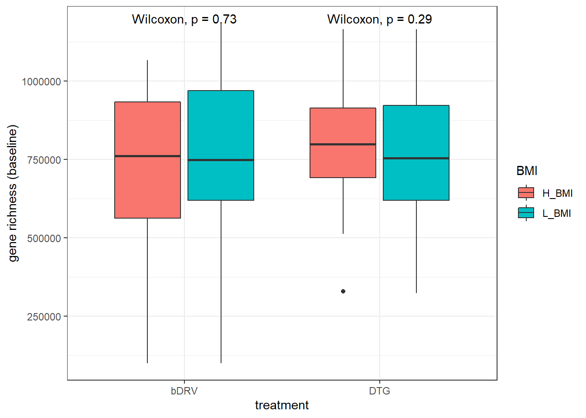
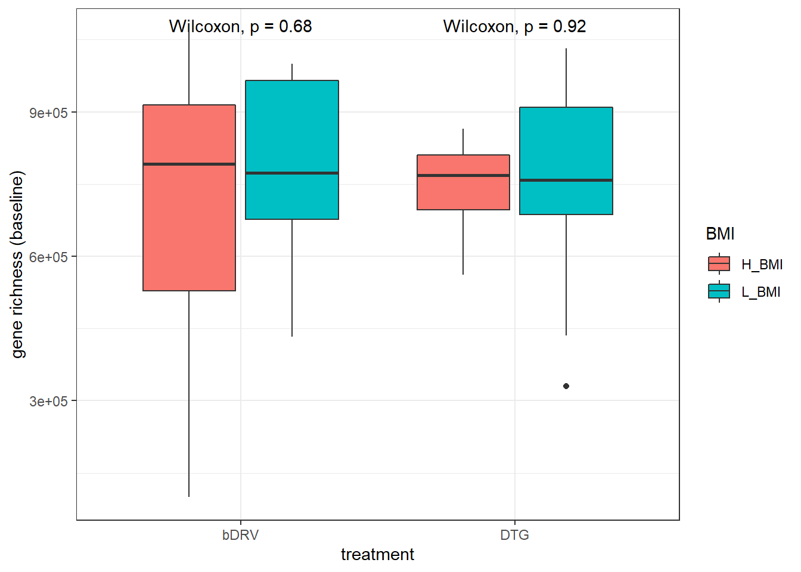

BMI_stratification
Carlos Blázquez Bondia
2023-03-06
Last updated: 2023-04-25
Checks: 6 1
Knit directory: advanz4/
This reproducible R Markdown analysis was created with workflowr (version 1.7.0). The Checks tab describes the reproducibility checks that were applied when the results were created. The Past versions tab lists the development history.
The R Markdown file has unstaged changes. To know which version of
the R Markdown file created these results, you’ll want to first commit
it to the Git repo. If you’re still working on the analysis, you can
ignore this warning. When you’re finished, you can run
wflow_publish to commit the R Markdown file and build the
HTML.
Great job! The global environment was empty. Objects defined in the global environment can affect the analysis in your R Markdown file in unknown ways. For reproduciblity it’s best to always run the code in an empty environment.
The command set.seed(20211203) was run prior to running
the code in the R Markdown file. Setting a seed ensures that any results
that rely on randomness, e.g. subsampling or permutations, are
reproducible.
Great job! Recording the operating system, R version, and package versions is critical for reproducibility.
Nice! There were no cached chunks for this analysis, so you can be confident that you successfully produced the results during this run.
Great job! Using relative paths to the files within your workflowr project makes it easier to run your code on other machines.
Great! You are using Git for version control. Tracking code development and connecting the code version to the results is critical for reproducibility.
The results in this page were generated with repository version 4db2a47. See the Past versions tab to see a history of the changes made to the R Markdown and HTML files.
Note that you need to be careful to ensure that all relevant files for
the analysis have been committed to Git prior to generating the results
(you can use wflow_publish or
wflow_git_commit). workflowr only checks the R Markdown
file, but you know if there are other scripts or data files that it
depends on. Below is the status of the Git repository when the results
were generated:
Ignored files:
Ignored: .RData
Ignored: .Rhistory
Ignored: .Rproj.user/
Ignored: analysis/.Rhistory
Ignored: analysis/010_Basic_Report_cache/
Ignored: analysis/250_BL_stratification.knit.md
Ignored: analysis/420_Taxonomy_DA_cache/
Ignored: analysis/510_Function_DA_cache/
Ignored: analysis/mre/
Ignored: data/mre.rds
Untracked files:
Untracked: analysis/Rplots.pdf
Untracked: analysis/figure/
Untracked: analysis/output/BMI_richness.pdf
Untracked: output/BMI_richness.pdf
Unstaged changes:
Modified: analysis/311_GR_vs_BMI.Rmd
Modified: output/figures/bmi_richness.svg
Note that any generated files, e.g. HTML, png, CSS, etc., are not included in this status report because it is ok for generated content to have uncommitted changes.
These are the previous versions of the repository in which changes were
made to the R Markdown (analysis/311_GR_vs_BMI.Rmd) and
HTML (docs/311_GR_vs_BMI.html) files. If you’ve configured
a remote Git repository (see ?wflow_git_remote), click on
the hyperlinks in the table below to view the files as they were in that
past version.
| File | Version | Author | Date | Message |
|---|---|---|---|---|
| Rmd | 4db2a47 | cblazquez | 2023-04-19 | added spaghetti plot to BMI rmd |
| html | 4db2a47 | cblazquez | 2023-04-19 | added spaghetti plot to BMI rmd |
| html | 72f1533 | cblazquez | 2023-04-18 | Updated website |
| html | 0aef819 | cblazquez-irsi | 2023-04-13 | fixed bug on GR_inflammation |
| Rmd | efdac31 | cblazquez-irsi | 2023-04-13 | Reestructured website |
| html | efdac31 | cblazquez-irsi | 2023-04-13 | Reestructured website |
| Rmd | 62208cc | cblazquez | 2023-03-22 | text changes on BMI vs GR |
| html | 62208cc | cblazquez | 2023-03-22 | text changes on BMI vs GR |
| Rmd | ec0749d | cblazquez | 2023-03-13 | Added BMI tests for week 24 |
| html | ec0749d | cblazquez | 2023-03-13 | Added BMI tests for week 24 |
| Rmd | 1b0ddcb | cblazquez | 2023-03-13 | Added richness vs stratification by BMI_group |
| html | 1b0ddcb | cblazquez | 2023-03-13 | Added richness vs stratification by BMI_group |
| Rmd | 1393493 | cblazquez | 2023-03-10 | started stratifcation by BMI |
| html | 1393493 | cblazquez | 2023-03-10 | started stratifcation by BMI |
| Rmd | 40fda18 | cblazquez | 2023-03-10 | Readded delta BMI vs GR |
| html | 40fda18 | cblazquez | 2023-03-10 | Readded delta BMI vs GR |
| Rmd | cbd814a | cblazquez | 2023-03-09 | added distribution per group |
| html | cbd814a | cblazquez | 2023-03-09 | added distribution per group |
| Rmd | ec3949c | cblazquez | 2023-03-08 | updated BMI_vs_GR |
| html | ec3949c | cblazquez | 2023-03-08 | updated BMI_vs_GR |
| Rmd | e1710d2 | cblazquez-irsi | 2023-03-07 | started analysis n GR vs BMI |
suggested package selbal vsuggested package DataExplorer vsuggested package lme4 vsuggested package merTools vStratification by BMI
This set of tests comes from recent studies which found that INSTIs are associated with greater BMI increases, respective to other treatments in ART-receiving patients. BMI is highly related to gut health, metabolism and microbiome, and may be a possible confussor regarding the interaction between treatment and microbiote, especially gene richness, as it may be masking the actual effect of treatment. The first is to assess how big of an impact our treatments have on the patients BMIs:
igc_df %>%
dplyr::select(SampleID, link_var, cat_var, long_var, BMI) %>%
get_lmm_effects(.,cat_vector = "cat_var", num_vector = "BMI", long_var = "long_var", link_var = "link_var", title = "BMI evolution/group")[1] "cat_var"
[1] "BMI"$cat_var
$cat_var$BMI
$cat_var$BMI$plot
$cat_var$BMI$summary
estimate st.err df tval p
(Intercept) 22.843254724 0.571780322 101.7421 39.9511033 5.318804e-64
long_var 0.025897438 0.004761211 161.2773 5.4392542 1.951105e-07
cat_varDTG 0.432868903 0.792613839 102.4527 0.5461284 5.861650e-01
long_var:cat_varDTG 0.003153891 0.006389171 161.2107 0.4936307 6.222388e-01require(rstatix)
bmi_test <-
get_comp_boxplots(dat = igc_df, cat_var = "cat_var", num_var = "BMI", long_var = "long_var", link_var = "link_var", pal = "Accent")
bmi_test$plot
bmi_test$test$cat %>%
dplyr::select(long_var, contains ( "group"), p.adj.signif) %>%
kableExtra::kable(format = "markdown")| long_var | group1 | group2 | groups | p.adj.signif |
|---|---|---|---|---|
| 0 | bDRV | DTG | bDRV, DTG | ns |
| 24 | bDRV | DTG | bDRV, DTG | ns |
| 48 | bDRV | DTG | bDRV, DTG | ns |
| 96 | bDRV | DTG | bDRV, DTG | ns |
Turns out looking at BMI alone, no categorical differences can be found. While both treatment groups significantly increase in BMI, no diferences between DTG an DRV are found.
Anyhow, this may have something to do with BMI differences at BL. The stratification should be by BMI categories: <18.5 (underweight), >25 (overweight), > 30 (obese)
peaks_bl <- igc_df %>%
dplyr::filter(long_var == 0, !is.na(BMI)) %>%
dplyr::pull(BMI) %>%
density() %>%
peak_finder(goal = "max")
median_bl <- igc_df %>%
dplyr::filter(long_var == 0, !is.na(BMI)) %>%
pull(BMI) %>%
median()
igc_df %>%
dplyr::filter(long_var == 0, !is.na(BMI)) %>%
ggplot(.) +
# geom_histogram(aes(x = BMI), fill = "grey", bins = 100) +
geom_density(aes(x = BMI, color = cat_var),bins = 100) +
theme_bw() +
geom_vline(xintercept = peaks_bl$x, lty = 3) +
geom_vline(xintercept = median_bl, col = "red") +
geom_text(data = peaks_bl, aes(x = x, y = y*.9, label = round(x, 3))) +
geom_text(aes(x = median_bl, y = max(peaks_bl$y)*.5, label = round(median_bl,3))) +
labs(x = "BMI", y = "kernel density", title = "BMI distribution at baseline") +
theme(axis.title.y = element_blank())Warning: Ignoring unknown parameters: bins
igc_df %>%
dplyr::filter(long_var == 0, !is.na(BMI)) %>%
dplyr::mutate(BMI_c = case_when(BMI >= 22 ~ "high",
BMI < 22 ~ "low")) %>%
group_by(BMI_c) %>%
tally() %>%
kableExtra::kable(format="markdown")| BMI_c | n |
|---|---|
| high | 40 |
| low | 38 |
It seems there is a certain bimodality in the distribution of BMI at BL in the DTG. However, still seems to be close to normal, so the max peak of 21.57 is fairly close to the median of 22.084. From this it 22 seems a good cut-off point between high and low BMI.
bmi_c <-
igc_df %>%
dplyr::filter(long_var == 0, !is.na(BMI)) %>%
dplyr::select(link_var, long_var, cat_var, BMI, richness) %>%
mutate(cluster = kmeans(BMI, centers = 2)$cluster)A kmeans clustering approach splits both groups at around BMI = 22.5. This should further reiforce the 22 threshold.
Stratification by BMI at baseline
Now we found a threshold appropiate to split by BMI, we can stratify the population by treatment and bmi, vs gene richness.
bmi_c %>%
dplyr::mutate(BMI_c = case_when(
BMI >= 22 ~ "high",
BMI < 22 ~ "low"
)) %>%
# dplyr::mutate(group_bmi = paste(cat_var, BMI_c)) %>%
ggplot(aes(x = cat_var, y = richness, fill = BMI_c)) +
geom_boxplot() +
ggpubr::stat_compare_means(method = "wilcox.test", hide.ns = F) +
theme_light()
bmi_c %>%
# dplyr::select(BMI, richness) %>%
dplyr::filter(!is.na(richness)) %>%
mutate(new_c = kmeans(.[,c("BMI","richness")], centers = 2)$cluster) %>%
ggplot(aes( x = BMI, y = richness, color = as.factor(new_c))) +
geom_point() +
theme_light()
Doesn’t seem to be any noticeable difference between groups or BMI types. No diferences richness between HBMI and LBMI could be found.
Stratification by BMI changes
Maybe the increase in gene richness may be associated with higher increase in BMI
vs GR BL
delta_bmi_df <-
igc_df %>%
dplyr::filter(!is.na(richness), !is.na(BMI)) %>%
group_by(link_var) %>%
dplyr::filter(any(long_var == 0),
any(long_var == 96)) %>%
mutate(bmi0 = BMI[long_var == 0],
gr0 = richness[long_var == 0],
delta_BMI_abs = BMI - BMI[long_var == 0],
delta_BMI_rel = (BMI - BMI[long_var == 0])*100 / BMI[long_var == 0],
delta_gr_abs = richness - richness[long_var == 0],
delta_gr_rel = (richness - richness[long_var == 0]) / (richness + richness[long_var == 0])) %>%
dplyr::mutate(bmi_c = case_when(
delta_BMI_abs[long_var == 96] >= 2.5 ~ "H_BMI",
delta_BMI_abs[long_var == 96] < 2.5 ~ "L_BMI"
)) %>%
dplyr::mutate(bmi_c_g = paste(bmi_c, cat_var, sep = "_"))
test_gr0_abs <-
delta_bmi_df %>%
glm(delta_BMI_abs ~ gr0 * cat_var, data = .) %>%
rstatix::anova_test() %>%
as.tibble() %>%
dplyr::slice(3L) %>%
pull(p)
deltas_gr0_abs <-
delta_bmi_df %>%
ggplot(aes(x = gr0, y = delta_BMI_abs, color = cat_var)) +
geom_point() +
geom_smooth(method = "glm", aes(fill = cat_var)) +
labs(title = "Absolute", subtitle = paste("ANOVA p =", test_gr0_abs),x = "Gene richness at baseline") +
theme_light() +
scale_color_brewer(palette = "Accent") +
scale_fill_brewer(palette = "Accent")
test_gr0_rel <-
delta_bmi_df %>%
glm(delta_BMI_rel ~ gr0 * cat_var, data = .) %>%
rstatix::anova_test() %>%
as.tibble() %>%
dplyr::slice(3) %>%
pull(p)
deltas_gr0_rel <-
delta_bmi_df %>%
ggplot(aes(x = gr0, y = delta_BMI_rel, color = cat_var)) +
geom_point() +
geom_smooth(method = "glm", aes(fill = cat_var)) +
theme_light() +
labs(title = "Relative", subtitle = paste("ANOVA p =", test_gr0_rel),x = "Gene richness at baseline") +
theme(axis.title.y = element_blank()) +
scale_color_brewer(palette = "Accent") +
scale_fill_brewer(palette = "Accent")
ggpubr::ggarrange(deltas_gr0_abs, deltas_gr0_rel, common.legend = T)
No correlation could be found relating
vs GR change
tp <- 96
peaks_abs <-
unique(metadata$group) %>%
purrr::set_names() %>%
purrr::map_dfr(function(treat) {
delta_bmi_df %>%
dplyr::filter(cat_var == treat) %>%
dplyr::pull(delta_BMI_abs) %>%
density() %>%
peak_finder(goal = "min") %>%
round(., 3) %>%
mutate(cat_var = treat)
})
plot_delta_abs <-
delta_bmi_df %>%
ggplot(aes(x = delta_BMI_abs)) +
geom_density(aes(color = cat_var)) +
geom_vline(aes(color = cat_var), xintercept = peaks_abs$x, lty = 3) +
geom_text(data = peaks_abs, aes(x = peaks_abs$x, y = peaks_abs$y*.9,label = peaks_abs$x, color = cat_var)) +
theme_light() +
labs(title = "Absolute", x = "BMI increase")
peaks_rel <-
unique(metadata$group) %>%
purrr::set_names() %>%
purrr::map_dfr(function(treat) {
delta_bmi_df %>%
dplyr::filter(cat_var == treat) %>%
dplyr::pull(delta_BMI_rel) %>%
density() %>%
peak_finder(goal = "min") %>%
round(., 3) %>%
mutate(cat_var = treat)
})
plot_delta_rel <-
delta_bmi_df %>%
ggplot(aes(x = delta_BMI_rel,color = cat_var)) +
geom_density(aes(color = cat_var)) +
geom_vline(data = peaks_rel, aes(color = cat_var), xintercept = peaks_rel$x, lty = 3) +
geom_text(data = peaks_rel, aes(x = x, y = y*.9,label = x, color = cat_var)) +
labs(title = "Relative (%)", x = "BMI increase") +
theme_light()+
theme(axis.title.y = element_blank())
# delta_bmi_df %>%
ggpubr::ggarrange(plot_delta_abs, plot_delta_rel, common.legend = T) 
Both treatment groups appear to have a unimodal distribution regarding their BMI increase at week 96, both in absolute and relative terms. However there seems to be a shift between both, as the “valley” between both peaks in the DTG group seems to be shifted toward the left, relative to the DRV group.
A good threshold to separate two groups seems to be 2.5 increase of absolute BMI. It separates both peaks from each group, more or less equitatively.
test_gr_abs <-
delta_bmi_df %>%
glm(delta_BMI_abs ~ delta_gr_abs * cat_var, data = .) %>%
rstatix::anova_test() %>%
as.tibble() %>%
dplyr::slice(3L) %>%
pull(p)
deltas_gr_abs <-
delta_bmi_df %>%
ggplot(aes(x = delta_gr_abs, y = delta_BMI_abs, color = cat_var)) +
geom_point() +
geom_smooth(method = "glm", aes(fill = cat_var)) +
labs(title = "Absolute", subtitle = paste("ANOVA p =", test_gr_abs), x = "Gene richness increase") +
theme_light() +
scale_color_brewer(palette = "Accent") +
scale_fill_brewer(palette = "Accent")
test_gr_rel <-
delta_bmi_df %>%
glm(delta_BMI_rel ~ delta_gr_rel * cat_var, data = .) %>%
rstatix::anova_test() %>%
as.tibble() %>%
dplyr::slice(3) %>%
pull(p)
deltas_gr_rel <-
delta_bmi_df %>%
ggplot(aes(x = delta_gr_rel, y = delta_BMI_rel, color = cat_var)) +
geom_point() +
geom_smooth(method = "glm", aes(fill = cat_var)) +
theme_light() +
labs(title = "Relative", subtitle = paste("ANOVA p =", test_gr_rel),x = "Gene richness increase") +
theme(axis.title.y = element_blank()) +
scale_color_brewer(palette = "Accent") +
scale_fill_brewer(palette = "Accent")
ggpubr::ggarrange(deltas_gr_abs, deltas_gr_rel, common.legend = T)
Stratifying population by BMI
We know from previous analysis that the biggest differences in GR beween grups happened at week 24: ## Week 24
cat_test <-
obj <-
delta_bmi_df %>%
dplyr::filter(!is.na(richness)) %>%
group_by(long_var) %>%
get_group_comparisons(
.,
link_var = "link_var",
long_var = "long_var",
cat_vector = "bmi_c_g",
num_vector = "richness",
type = "categorical",
comps = unique(delta_bmi_df$bmi_c_g),
graph_coords = T
)
objtest <- obj %>% pluck("bmi_c_g", "richness", "test")
objstats <- obj %>% pluck("bmi_c_g", "richness", "stats") %>%
mutate(stat = paste(round(median, 2), " [", round(iqr, 2), "]", sep = ""))
cat_test_df <-
objtest %>%
pivot_longer(cols = c("group1", "group2")) %>%
dplyr::rename(cat_var = value) %>%
dplyr::left_join(objstats[, c("cat_var", "long_var", "stat")], by = c("cat_var", "long_var")) %>%
pivot_wider(names_from = "name",
values_from = c("cat_var", "stat")) %>%
dplyr::select(long_var,
group1 = cat_var_group1,
group2 = cat_var_group2,
contains("stat"),
y.position,
xmin,xmax,
p.adj,
p.adj.signif)
long_test <-
combn(unique(delta_bmi_df$long_var), 2, simplify = F) %>%
purrr::set_names() %>%
purrr::map_dfr(function(comb){
obj <-
delta_bmi_df %>%
dplyr::filter(!is.na(richness),
long_var %in% comb) %>%
# group_by(bmi_c_g) %>%
get_group_comparisons(.,link_var = "link_var", long_var = "long_var",cat_vector = "bmi_c_g",num_vector = "richness",type = "longitudinal", comps = comb,graph_coords = T)
obj %>%
pluck("bmi_c_g","richness","test") %>%
rstatix::adjust_pvalue( method = "BH", p.col = "p") %>%
full_join(obj$bmi_c_g[["richness"]]$stats, by = "cat_var")%>%
dplyr::mutate(.y. = "richness") %>%
dplyr::select(cat_var, group1, group2,num_var = .y.,y.position, xmin, xmax, contains("median"), contains("iqr"), "p.adj")
})%>%
rstatix::add_significance()
summ_df <-
delta_bmi_df %>%
dplyr::group_by(long_var,bmi_c, cat_var, bmi_c_g) %>%
summarise(median_gr = median(richness),
sd_gr = sd(richness))
spaghetti_plot_list <-
igc_df %>%
# dplyr::filter(!is.na(!!sym(nv)), !is.na(bmi_c_g)) %>%
mutate(long_var = as.factor(long_var)) %>%
ggplot(aes(
x = long_var,
y = richness,
color = bmi_c_g
)) +
geom_point(
data = summ_df,
aes(
x = as.factor(long_var),
y = median_gr,
color = cat_var,
shape = bmi_c,
group = bmi_c_g
),
size = 3,
position = position_dodge(.8)
) +
geom_errorbar(
data = summ_df,
aes(
x = as.factor(long_var),
ymin = median_gr - sd_gr,
ymax = median_gr + sd_gr,
color = cat_var,
lty = bmi_c,
group = bmi_c_g
),
inherit.aes = F,
width = 1,
position = position_dodge(.8)
) +
geom_line(
data = summ_df,
aes(
x = as.factor(long_var),
y = median_gr,
color = cat_var,
lty = bmi_c,
group = bmi_c_g
),
inherit.aes = F,
position = position_dodge(.8)
) +
# stat_smooth(method = "loess", alpha = .2, aes(fill = cat_var), position = position_dodge(.8)) +
theme_bw() +
labs(
x = "weeks",
y = "richness",
color = "group",
shape = "BMI increase",
lty = "BMI increase",
title = "richness vs BMI increase"
) +
ggpubr::stat_pvalue_manual(cat_test_df, label = "p.adj.signif", hide.ns = T) +
ggpubr::stat_pvalue_manual(long_test, label = "p.adj.signif", hide.ns = T) +
scale_color_brewer(palette = "Dark2") +
scale_fill_brewer(palette = "Dark2") +
theme(axis.title.x = element_blank())
# scale_x_continuous(breaks = c(0,48,96))
spaghetti_plot_list %>%
ggsave(plot= ., device = "svg",path = here::here("output","figures"), filename = "bmi_richness.svg", dpi= 300, width = 16, height = 12, units = "cm")
spaghetti_plot_listApparently, the only significant differences are between both subgroups belonging to the DTG arm, this suggests the GR change relates more to group rather than BMI.
| arm | group1 | group2 | median1 | iqr1 | median2 | iqr2 | medianChange | iqr_change | p.adj |
|---|---|---|---|---|---|---|---|---|---|
| H_BMI_DTG | 0 | 96 | 748944 | 155107.8 | 910198 | 178215.3 | 197892 | 179453.0 | 0.0312 |
| L_BMI_DTG | 0 | 96 | 758006 | 287818.3 | 981756 | 327681.0 | 169678 | 172484.4 | 0.0312 |
# A tibble: 0 x 11
# ... with 11 variables: long_var <int>, group1 <chr>, group2 <chr>,
# statistic <dbl>, stat_group1 <chr>, stat_group2 <chr>, y.position <dbl>,
# xmin <dbl>, xmax <dbl>, p.adj <dbl>, p.adj.signif <chr>
Here it appears the threshold should be un BMI increase of 1.3, let’s do that:



| group_bmi | .y. | group1 | group2 | n1 | n2 | statistic | p | p.adj | p.adj.signif |
|---|---|---|---|---|---|---|---|---|---|
| bDRV_H_BMI | richness | 24 | 96 | 19 | 38 | 207 | 9.00e-03 | 0.056000 | ns |
| DTG_H_BMI | richness | 0 | 24 | 44 | 35 | 563 | 4.20e-02 | 0.125000 | ns |
| DTG_H_BMI | richness | 0 | 48 | 44 | 47 | 601 | 5.91e-04 | 0.003000 | ** |
| DTG_H_BMI | richness | 0 | 96 | 44 | 48 | 506 | 1.74e-05 | 0.000104 | *** |
| DTG_H_BMI | richness | 24 | 96 | 35 | 48 | 606 | 3.10e-02 | 0.125000 | ns |
| DTG_L_BMI | richness | 0 | 48 | 54 | 50 | 806 | 4.05e-04 | 0.002000 | ** |
| DTG_L_BMI | richness | 0 | 96 | 54 | 45 | 819 | 5.00e-03 | 0.027000 | * |
Week 96
Now that we saw the increase in gene richness follows a bimodal distribution in each group, it is possible that we didn’t find an effect of gene richness per treatment group due to the confusor effect of BMI. We will split the population between high (BMI_H) and low BMI increase (BMI_L). The cutting point will be an absolute increase of 2.5 in BMI, as seen earlier in the delta distribution.
delta_bmi_df %>%
dplyr::filter(long_var == 96) %>%
dplyr::mutate(bmi_c = case_when(
delta_BMI_abs >= 2.5 ~ "H_BMI",
delta_BMI_abs < 2.5 ~ "L_BMI"
)) %>%
# dplyr::select(link_var = record_id, bmi_c) %>%
# left_join(igc_df, by = "link_var") %>%
# mutate(cat_var2 = paste(cat_var, bmi_c)) %>%
dplyr::filter(!is.na(bmi_c)) %>%
ggplot(aes(y = gr0, x = cat_var, fill = bmi_c)) +
ggpubr::stat_compare_means(method = "wilcox.test") +
geom_boxplot() +
theme_bw() +
labs(x = "treatment", y = "gene richness (baseline)", fill = "BMI")
# delta_bmi_df %>%
# dplyr::mutate(bmi_c = case_when(
# delta_BMI_abs >= 2.5 ~ "H_BMI",
# delta_BMI_abs < 2.5 ~ "L_BMI"
# )) %>%
# dplyr::filter(!is.na(bmi_c)) %>%
# ggplot(aes(y = delta_gr_rel, x = cat_var, fill = bmi_c)) +
# ggpubr::stat_compare_means(method = "wilcox.test") +
# geom_boxplot() +
# theme_bw() +
# labs(x = "treatment", y = "GR increase at week 96 (%)", fill = "BMI")
delta_bmi_df %>%
dplyr::filter(long_var == 96) %>%
dplyr::mutate(bmi_c = case_when(
delta_BMI_abs >= 2.5 ~ "H_BMI",
delta_BMI_abs < 2.5 ~ "L_BMI"
)) %>%
dplyr::select(record_id, bmi_c) %>%
dplyr::rename(link_var = record_id) %>%
dplyr::right_join(igc_df, by = "link_var") %>%
dplyr::filter(!is.na(bmi_c)) %>%
dplyr::mutate(group_bmi = paste(cat_var, bmi_c, sep = "_")) %>%
group_by(group_bmi) %>%
rstatix::wilcox_test(richness ~ long_var) %>%
dplyr::filter(!p.adj.signif == "ns") %>%
kableExtra::kable(format = "markdown")| group_bmi | .y. | group1 | group2 | n1 | n2 | statistic | p | p.adj | p.adj.signif |
|---|---|---|---|---|---|---|---|---|---|
| DTG_H_BMI | richness | 0 | 96 | 8 | 10 | 6 | 0.001 | 0.008 | ** |
# cat_test <-
# delta_bmi_df %>%
# dplyr::mutate(bmi_c = case_when(
# delta_BMI_abs >= 2.5 ~ "H_BMI",
# delta_BMI_abs < 2.5 ~ "L_BMI"
# )) %>%
# dplyr::filter(long_var == 96) %>%
# get_group_comparisons(dat = .,long_var = "long_var", link_var = "record_id",cat_vector = "bmi_c",num_vector = "richness",type = "categorical",graph_coords = "yes", comps = c("DTG_H_BMI","DTG_L_BMI","bDRV_H_BMI","bDRV_L_BMI"))
#
# delta_bmi_df %>%
# # dplyr::filter(long_var == 96) %>%
# dplyr::mutate(bmi_c = case_when(
# delta_BMI_abs >= 2.5 ~ "H_BMI",
# delta_BMI_abs < 2.5 ~ "L_BMI"
# )) %>%
# dplyr::mutate(group_bmi = paste(cat_var, bmi_c, sep = "_")) %>%
# ggplot(aes(y = richness, x = as.factor(long_var), color = group_bmi)) +
# geom_boxplot(aes(x = as.factor(long_var))) +
# ggpubr::stat_compare_means(method = "wilcox.test",hide.ns = T, label = "p.signif", position = position_dodge(0.8)) +
# # geom_point() +
# geom_smooth(method = "glm", alpha = 0) +
# theme_bw() +
# labs(x = "week")
sessionInfo()R version 4.0.2 (2020-06-22)
Platform: x86_64-w64-mingw32/x64 (64-bit)
Running under: Windows 10 x64 (build 22621)
Matrix products: default
locale:
[1] LC_COLLATE=Spanish_Spain.1252 LC_CTYPE=Spanish_Spain.1252
[3] LC_MONETARY=Spanish_Spain.1252 LC_NUMERIC=C
[5] LC_TIME=Spanish_Spain.1252
attached base packages:
[1] stats graphics grDevices utils datasets methods base
other attached packages:
[1] rstatix_0.7.1 metar_0.1.5 ggpubr_0.4.0 RColorBrewer_1.1-3
[5] forcats_0.5.2 stringr_1.4.0 dplyr_1.0.8 purrr_0.3.4
[9] readr_2.0.1 tidyr_1.2.0 tibble_3.1.6 ggplot2_3.3.5
[13] tidyverse_1.3.1
loaded via a namespace (and not attached):
[1] readxl_1.3.1 backports_1.4.1 blme_1.0-5
[4] workflowr_1.7.0 systemfonts_1.0.4 plyr_1.8.8
[7] igraph_1.2.9 splines_4.0.2 listenv_0.9.0
[10] digest_0.6.29 foreach_1.5.2 htmltools_0.5.2
[13] lmerTest_3.1-3 fansi_1.0.3 magrittr_2.0.3
[16] cluster_2.1.0 tzdb_0.3.0 globals_0.16.2
[19] Biostrings_2.58.0 modelr_0.1.8 svglite_2.1.0
[22] colorspace_2.0-3 rvest_1.0.1 textshaping_0.3.6
[25] haven_2.3.1 xfun_0.30 crayon_1.5.2
[28] jsonlite_1.8.0 lme4_1.1-29 survival_3.1-12
[31] iterators_1.0.14 ape_5.6-2 glue_1.6.2
[34] kableExtra_1.3.4 gtable_0.3.1 zlibbioc_1.36.0
[37] XVector_0.30.0 webshot_0.5.2 phyloseq_1.34.0
[40] car_3.1-1 Rhdf5lib_1.12.1 BiocGenerics_0.36.1
[43] abind_1.4-5 scales_1.2.1 mvtnorm_1.1-3
[46] DBI_1.1.3 Rcpp_1.0.8.3 viridisLite_0.4.1
[49] xtable_1.8-4 merTools_0.5.2 stats4_4.0.2
[52] htmlwidgets_1.5.4 httr_1.4.4 ellipsis_0.3.2
[55] farver_2.1.1 DataExplorer_0.8.2 pkgconfig_2.0.3
[58] dbplyr_2.1.1 utf8_1.2.2 here_1.0.1
[61] labeling_0.4.2 tidyselect_1.1.2 rlang_1.0.2
[64] reshape2_1.4.4 later_1.3.0 munsell_0.5.0
[67] cellranger_1.1.0 tools_4.0.2 cli_3.2.0
[70] generics_0.1.3 selbal_0.1.0 ade4_1.7-20
[73] broom_1.0.2 evaluate_0.19 biomformat_1.18.0
[76] fastmap_1.1.0 ragg_1.2.4 arm_1.12-2
[79] yaml_2.3.6 knitr_1.38 fs_1.5.2
[82] future_1.30.0 nlme_3.1-148 whisker_0.4.1
[85] mime_0.12 xml2_1.3.2 compiler_4.0.2
[88] rstudioapi_0.13 ggsignif_0.6.4 reprex_2.0.1
[91] stringi_1.7.6 highr_0.10 logger_0.2.2
[94] lattice_0.20-41 Matrix_1.5-3 nloptr_2.0.0
[97] vegan_2.6-4 permute_0.9-7 multtest_2.46.0
[100] vctrs_0.4.1 pillar_1.8.1 lifecycle_1.0.1
[103] networkD3_0.4 rhdf5filters_1.2.1 furrr_0.3.1
[106] jquerylib_0.1.4 cowplot_1.1.1 data.table_1.14.6
[109] httpuv_1.6.7 R6_2.5.1 promises_1.2.0.1
[112] gridExtra_2.3 IRanges_2.24.1 parallelly_1.33.0
[115] codetools_0.2-16 boot_1.3-25 MASS_7.3-51.6
[118] assertthat_0.2.1 rhdf5_2.34.0 rprojroot_2.0.3
[121] withr_2.5.0 S4Vectors_0.28.1 broom.mixed_0.2.9.4
[124] mgcv_1.8-31 parallel_4.0.2 hms_1.1.2
[127] grid_4.0.2 coda_0.19-4 minqa_1.2.5
[130] rmarkdown_2.19 carData_3.0-5 git2r_0.30.1
[133] numDeriv_2016.8-1.1 Biobase_2.50.0 shiny_1.7.1
[136] lubridate_1.8.0